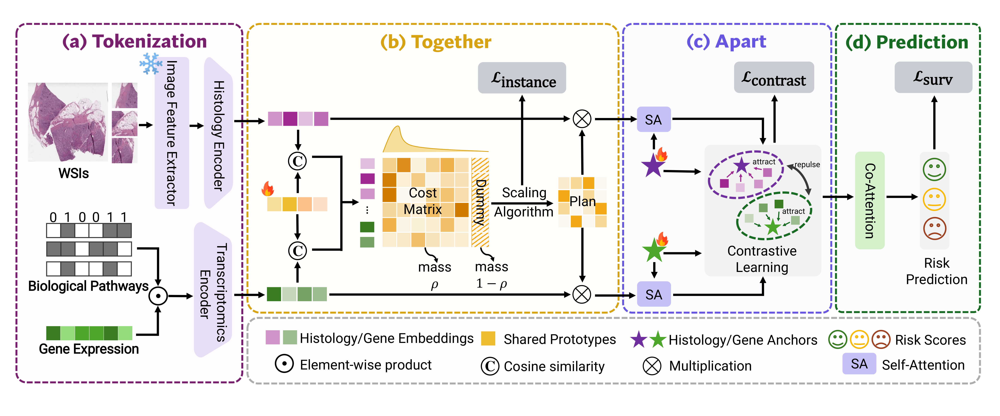

Together: shared-prototype UOT alignment
Map histology and genomics to the same prototype bank, which serves as a common coordinate system. Compute assignments with joint UOT under relaxed prototype-side marginal constraints.
1Stony Brook University 2Stanford University 3Johns Hopkins University 4Brookhaven National Laboratory
*Equal contribution

TTA overview. Together learns shared prognostic structure across histology and genomics. Apart preserves complementary modality-specific evidence for survival prediction.
Learning shared prognostic signals and preserving modality-specific evidence are equally important for effective multimodal survival modeling.
Existing methods often favor cross-modal alignment, risking over-alignment collapse that obscures modality-specific evidence. TTA balances the two by aligning shared structure and preserving what remains distinct.
TTA combines three complementary strengths:
Given a patient's pathology WSI and gene-expression profile, TTA follows four steps: a. Tokenization; b. Together for shared-prototype alignment; c. Apart for modality preservation; d. Prediction.
Map histology and genomics to the same prototype bank, which serves as a common coordinate system. Compute assignments with joint UOT under relaxed prototype-side marginal constraints.
Prototype-side relaxation. Here, \(Q\) denotes token-to-prototype transport and \(C_n\) its cost matrix for patient \(n\). We fix the token-side marginal \(a\) and relax the prototype-side marginal \(b\) with KL divergence:
\[ Q^\star =\arg\min_{Q\ge 0}\quad \langle Q,C_n\rangle +\gamma\,\mathrm{KL}\!\left(Q^\top\mathbf{1}\,\middle\|\,b\right) \quad \mathrm{s.t.}\quad Q\mathbf{1}=a. \]This allows patient-dependent deviations while preventing the plan from collapsing onto a few dominant prototypes.
Curriculum on transported mass. We use \(\rho\) to control the mass assigned to real prototypes, while the remaining mass is absorbed by a sink:
\[ \begin{aligned} b_\rho=\tfrac{\rho}{K}\mathbf{1}_K,\qquad Q_\rho^\star &=\arg\min_{Q\ge 0}\quad \langle Q,C_n\rangle +\gamma\,\mathrm{KL}\!\left(Q^\top\mathbf{1}\,\middle\|\,b_\rho\right)\\ &\mathrm{s.t.}\quad Q\mathbf{1}\le a,\qquad \mathbf{1}^\top Q\mathbf{1}=\rho. \end{aligned} \]Small \(\rho\) keeps assignments conservative early in training, while larger \(\rho\) enforces more decisive matching.
Use modality-specific anchors and contrastive regularization to retain modality identity after alignment.
We append each modality anchor to its prototype tokens, refine them with lightweight self-attention, and apply contrastive regularization to maintain separation.
TTA consistently outperforms multimodal baselines, achieving the best Overall C-index of 0.693 with a +2.6% gain over MMP. It ranks first on BRCA, STAD, and KIRC. Results are 5-fold mean ± std.
| Model | BRCA | BLCA | STAD | CRC | KIRC | Overall |
|---|---|---|---|---|---|---|
| MCAT | 0.650 ± 0.096 | 0.623 ± 0.055 | 0.528 ± 0.112 | 0.579 ± 0.134 | 0.699 ± 0.121 | 0.615 |
| CMTA | 0.687 ± 0.077 | 0.622 ± 0.056 | 0.539 ± 0.076 | 0.568 ± 0.102 | 0.711 ± 0.121 | 0.625 |
| MOTCat | 0.717 ± 0.058 | 0.631 ± 0.059 | 0.576 ± 0.075 | 0.598 ± 0.128 | 0.708 ± 0.109 | 0.646 |
| SurvPath | 0.696 ± 0.061 | 0.619 ± 0.051 | 0.555 ± 0.133 | 0.588 ± 0.134 | 0.742 ± 0.101 | 0.640 |
| PIBD | 0.683 ± 0.056 | 0.661 ± 0.034 | 0.552 ± 0.054 | 0.582 ± 0.077 | 0.732 ± 0.139 | 0.642 |
| MRePath | 0.703 ± 0.036 | 0.651 ± 0.060 | 0.579 ± 0.062 | 0.639 ± 0.101 | 0.743 ± 0.112 | 0.663 |
| MMP | 0.724 ± 0.067 | 0.640 ± 0.050 | 0.594 ± 0.066 | 0.634 ± 0.118 | 0.743 ± 0.133 | 0.667 |
| LD-CVAE | 0.709 ± 0.047 | 0.676 ± 0.035 | 0.589 ± 0.083 | 0.602 ± 0.120 | 0.751 ± 0.139 | 0.665 |
| TTA (Ours) | 0.726 ± 0.039 | 0.662 ± 0.079 | 0.613 ± 0.079 | 0.685 ± 0.131 | 0.778 ± 0.117 | 0.693 |
Ablations confirm that Together and Apart are complementary: either stage improves Overall C-index, while combining both yields a +5.0% gain.
| Together | Apart | BRCA | BLCA | STAD | CRC | KIRC | Overall |
|---|---|---|---|---|---|---|---|
| 0.682 ± 0.082 | 0.660 ± 0.063 | 0.558 ± 0.071 | 0.561 ± 0.170 | 0.756 ± 0.124 | 0.643 | ||
| ✓ | 0.675 ± 0.078 | 0.682 ± 0.067 | 0.582 ± 0.043 | 0.587 ± 0.177 | 0.784 ± 0.088 | 0.662 | |
| ✓ | 0.683 ± 0.034 | 0.651 ± 0.077 | 0.585 ± 0.099 | 0.625 ± 0.145 | 0.785 ± 0.098 | 0.666 | |
| ✓ | ✓ | 0.726 ± 0.039 | 0.662 ± 0.079 | 0.613 ± 0.079 | 0.685 ± 0.131 | 0.778 ± 0.117 | 0.693 |
Shared prototypes and joint UOT jointly improve Overall C-index by +1.2%, showing that a common prototype geometry and unified transport plan align cross-modal evidence more coherently.
| Shared Prototypes | Joint UOT | BRCA | BLCA | STAD | CRC | KIRC | Overall |
|---|---|---|---|---|---|---|---|
| 0.755 ± 0.025 | 0.671 ± 0.025 | 0.594 ± 0.063 | 0.609 ± 0.199 | 0.780 ± 0.108 | 0.681 | ||
| ✓ | 0.713 ± 0.034 | 0.662 ± 0.081 | 0.605 ± 0.081 | 0.672 ± 0.110 | 0.768 ± 0.130 | 0.684 | |
| ✓ | ✓ | 0.726 ± 0.039 | 0.662 ± 0.079 | 0.613 ± 0.079 | 0.685 ± 0.131 | 0.778 ± 0.117 | 0.693 |
Anchor refinement and contrastive regularization work best together, improving Overall C-index by +3.1% while preserving modality-specific structure.
| Anchor Refinement | Contrastive Regularization | BRCA | BLCA | STAD | CRC | KIRC | Overall |
|---|---|---|---|---|---|---|---|
| 0.675 ± 0.078 | 0.682 ± 0.067 | 0.582 ± 0.043 | 0.587 ± 0.177 | 0.784 ± 0.088 | 0.662 | ||
| ✓ | 0.694 ± 0.048 | 0.648 ± 0.066 | 0.598 ± 0.099 | 0.636 ± 0.155 | 0.771 ± 0.122 | 0.669 | |
| ✓ | 0.688 ± 0.072 | 0.678 ± 0.053 | 0.589 ± 0.032 | 0.627 ± 0.134 | 0.778 ± 0.083 | 0.672 | |
| ✓ | ✓ | 0.726 ± 0.039 | 0.662 ± 0.079 | 0.613 ± 0.079 | 0.685 ± 0.131 | 0.778 ± 0.117 | 0.693 |
The learned prototype structures reveal interpretable cross-modal patterns associated with clinical outcomes. Case-level visualizations show representative WSI patches and structured hallmark pathway signals associated with shared prototypes.


@inproceedings{liu2026together,
title = {Together, Then Apart: Balancing Alignment and Distinctiveness for Multimodal Survival Analysis},
author = {Liu, Wenjing and Ren, Qin and Zhang, Wen and Lin, Yuewei and You, Chenyu},
booktitle = {Proceedings of the 19th European Conference on Computer Vision},
year = {2026}
}